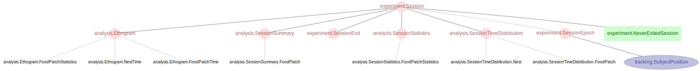
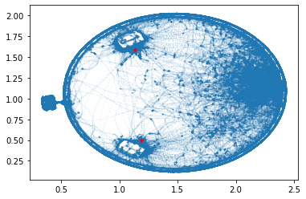
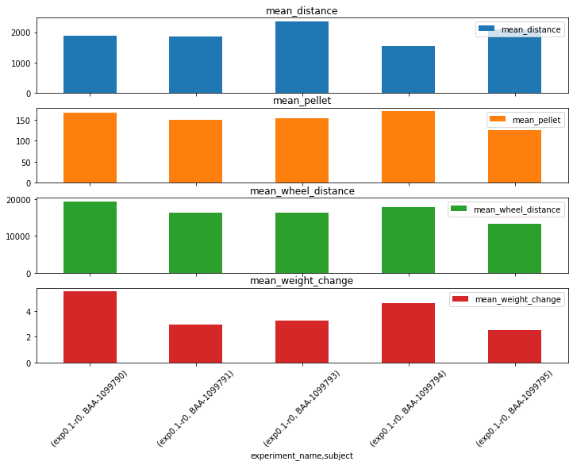

Accessing Aeon Data from the Datajoint Database#
# Imports.
import matplotlib.pyplot as plt
import numpy as np
import datajoint as dj
# Configure 'aeon-db' as database host and get schemas
dj.config["database.host"] = "aeon-db2"
dj.config["display.limit"] = 5 # rows per displayed table
dj.conn()
db_prefix = "aeon_"
experiment = dj.create_virtual_module("experiment", db_prefix + "experiment")
tracking = dj.create_virtual_module("tracking", db_prefix + "tracking")
analysis = dj.create_virtual_module("analysis", db_prefix + "analysis")
Please enter DataJoint username: jbhagat
Please enter DataJoint password: ················
Connecting jbhagat@aeon-db:3306
# View table diagram of `experiment.Session` + levels up/down
dj.Diagram(experiment.Session) + 2

Position tracking#
# Example: position tracking table restricted by a subject and some particular sessions
(
tracking.SubjectPosition
& 'subject = "BAA-1099790"'
& 'session_start BETWEEN "2021-06-04" AND "2021-06-10"'
)
| experiment_name e.g exp0-a | subject | session_start | time_bin_start datetime of the start of this recorded TimeBin | epoch_start datetime of the start of this Epoch | timestamps (datetime) timestamps of the position data | position_x (px) animal's x-position, in the arena's coordinate frame | position_y (px) animal's y-position, in the arena's coordinate frame | position_z (px) animal's z-position, in the arena's coordinate frame | area (px^2) animal's size detected in the camera | speed (px/s) speed |
|---|---|---|---|---|---|---|---|---|---|---|
| exp0.1-r0 | BAA-1099790 | 2021-06-04 07:46:35.178000 | 2021-06-04 07:00:00 | 2021-06-04 07:46:35.178000 | =BLOB= | =BLOB= | =BLOB= | =BLOB= | =BLOB= | =BLOB= |
| exp0.1-r0 | BAA-1099790 | 2021-06-04 07:46:35.178000 | 2021-06-04 07:00:00 | 2021-06-04 07:56:35.178000 | =BLOB= | =BLOB= | =BLOB= | =BLOB= | =BLOB= | =BLOB= |
| exp0.1-r0 | BAA-1099790 | 2021-06-04 07:46:35.178000 | 2021-06-04 08:00:00 | 2021-06-04 08:00:00 | =BLOB= | =BLOB= | =BLOB= | =BLOB= | =BLOB= | =BLOB= |
| exp0.1-r0 | BAA-1099790 | 2021-06-04 07:46:35.178000 | 2021-06-04 08:00:00 | 2021-06-04 08:10:00 | =BLOB= | =BLOB= | =BLOB= | =BLOB= | =BLOB= | =BLOB= |
| exp0.1-r0 | BAA-1099790 | 2021-06-04 07:46:35.178000 | 2021-06-04 08:00:00 | 2021-06-04 08:20:00 | =BLOB= | =BLOB= | =BLOB= | =BLOB= | =BLOB= | =BLOB= |
...
Total: 89
# Fetch positions from the table (array of arrays)
positionx, positiony = (
tracking.SubjectPosition
& 'subject = "BAA-1099790"'
& 'session_start BETWEEN "2021-06-04" AND "2021-06-10"'
).fetch("position_x", "position_y", order_by="epoch_start")
# Stack arrays to get single x, y arrays and do pixel -> meter conversion
positionx = np.hstack(positionx)
positiony = np.hstack(positiony)
positionx = positionx * 0.00192
positiony = positiony * 0.00192
# Get location of patches from 'FoodPatch' table (which ingests from metadata)
patchx, patchy = (experiment.ExperimentFoodPatch.Position).fetch(
"food_patch_position_x", "food_patch_position_y"
)
# Plot position data with food patch positions overlaid
fig, ax = plt.subplots(1, 1)
ax.plot(positionx, positiony, ".", alpha=0.1, markersize=1)
for x, y in zip(patchx, patchy):
ax.plot(x, y, "r*", markersize=5)

Session summary analysis#
# Example: session summary table restricted by sessions
analysis.SessionSummary & 'session_start >= "2021-06-14"'
| experiment_name e.g exp0-a | subject | session_start | total_distance_travelled (m) total distance the animal travelled during this session | total_pellet_count total pellet delivered for all patches during this session | total_wheel_distance_travelled total wheel distance for all patches | change_in_weight weight change before/after the session |
|---|---|---|---|---|---|---|
| exp0.1-r0 | BAA-1099790 | 2021-06-15 13:59:20.369000 | 1669.36 | 201 | 20151.1 | 4.8 |
| exp0.1-r0 | BAA-1099790 | 2021-06-16 13:21:37.711000 | 1453.87 | 106 | 10628.7 | 2.6 |
| exp0.1-r0 | BAA-1099790 | 2021-06-17 13:07:55.917000 | 1472.2 | 150 | 15082.9 | 3.7 |
| exp0.1-r0 | BAA-1099790 | 2021-06-25 13:22:59.812000 | 1267.98 | 250 | 28875.5 | 6.1 |
| exp0.1-r0 | BAA-1099790 | 2021-06-28 12:43:44.099000 | 2993.43 | 222 | 38537.8 | 5.4 |
...
Total: 41
# Aggregate over subjects and get mean values
subject_summary_query = experiment.Experiment.Subject.aggr(
analysis.SessionSummary,
mean_distance="AVG(total_distance_travelled)",
mean_pellet="AVG(total_pellet_count)",
mean_wheel_distance="AVG(total_wheel_distance_travelled)",
mean_weight_change="AVG(change_in_weight)",
)
subject_summary_query
| experiment_name e.g exp0-a | subject | mean_distance calculated attribute | mean_pellet calculated attribute | mean_wheel_distance calculated attribute | mean_weight_change calculated attribute |
|---|---|---|---|---|---|
| exp0.1-r0 | BAA-1099790 | 1874.1334979717549 | 166.6154 | 19346.26502403846 | 5.503846237292657 |
| exp0.1-r0 | BAA-1099791 | 1850.0412190755208 | 150.0000 | 16310.257866753473 | 2.9555555714501276 |
| exp0.1-r0 | BAA-1099793 | 2361.7435607910156 | 152.5000 | 16269.679248046876 | 3.2600000143051147 |
| exp0.1-r0 | BAA-1099794 | 1535.6339768629807 | 170.0769 | 17836.713416466348 | 4.569230758226835 |
| exp0.1-r0 | BAA-1099795 | 2084.028638203939 | 125.2222 | 13313.77647210492 | 2.522222214274936 |
Total: 5
# Fetch data back in the form of pandas DataFrame
subject_summary = subject_summary_query.fetch(format="frame")
# Ensure all data is in float representation
subject_summary = subject_summary.astype(
{
"mean_distance": float,
"mean_pellet": float,
"mean_wheel_distance": float,
"mean_weight_change": float,
}
)
# Create bar plots
subject_summary.plot.bar(subplots=True, figsize=(12, 8), rot=45)
